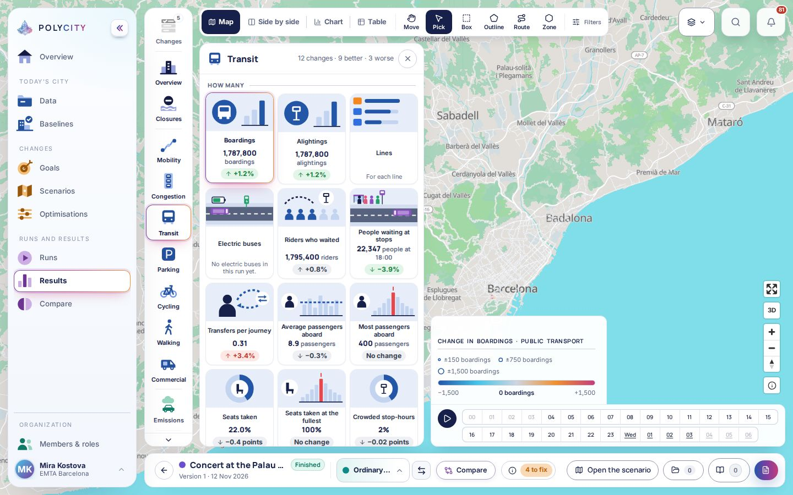
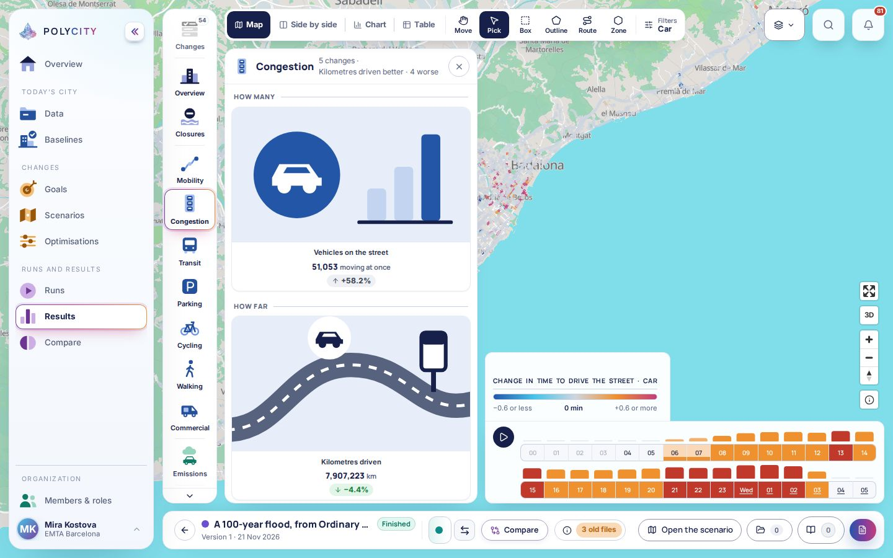

Autoritat del Transport Metropolità · Barcelona trial · November 2026
Four disruptions, one simulated Barcelona.
A coastal flood on R1, a tunnel closed at the morning peak, 17,000 people leaving a concert and the streets a flood would close, each run as a whole weekday and read against the same day with nothing wrong.
What ATM asked
Four scenarios, four questions each.
ATM sent four disruptions it plans for. For every one it asked the same four questions, and every answer below was read off Polycity's own Results and Compare pages.
1
R1 coastal flood, Badalona to Mataró
The sea closes R1's coastal stretch for a whole day. Who loses their train, where do they go, and does a replacement bus help? Read the answer
2
Tunnel incident, Sants to Plaça de Catalunya
The rail tunnel under the centre closes from 07:00 to 10:00. R1 and R4 are cut back at its ends. Read the answer
3
Event exodus at the Palau Sant Jordi
17,000 people leave a concert on Montjuïc late in the evening. Which lines carry them, and who is left at the stop? Read the answer
4
Regional flood risk ranking
Which streets and tracks inside a flood zone hurt the city most when they close, and what does a whole flood day cost? Read the answer
The four questions
Affected demandWho loses their trip or their line, and how many.
Transit alternativesWhich lines and ways of travelling take them instead.
Rest of the rail networkWhat happens to the trains and lines not closed.
Whole mobility systemHours lost, trips by car, residents stranded, the yearly cost.
The city they ran on
Barcelona, Badalona and the coast to Mataró, simulated through a weekday.
Every scenario runs as the same Tuesday, 17 November 2026, with every timetable of TMB, AMB, Renfe and the Generalitat for that day. Each disruption is set beside a plain day of the same city with nothing closed.
2.07 millionresidents in 115 zones, four trial scenarios
3.49 millionresidents in 146 zones, Castelldefels to Mataró, flood days
10 roundsof the whole day, residents trying new plans each round
1 in 100residents modelled, each standing for 100 people
Scenario 1 · R1 coastal flood
R1 closed from Badalona to Mataró takes 62,800 rides a day off the coast.
Seven stations close and 187 departures are cut back. A second day adds a storm bus every 15 minutes along the N-II, at the coast buses' own pace.
Compare · R1 closed against the plain dayFilm
R1 closed, without the storm busThe Decision brief, then the riders cut and where they went.
Results · R1 closed with the storm busFilm
The storm bus dayTransit against the plain day, line by line.
Affected demand
62,800
R1 rides a day cut on the stretch; 8,100 of them never arrive.
Transit alternatives
+12,400
riders a day on the Sagalés e11 buses, and 2,400 more on AMB's coast buses.
Rest of the rail network
Unchanged
R2 and R4 carry the same riders with the same delays.
Whole mobility system
−0.1%
trips across the city, and transit trips −3.0%.
Where the 62,800 cut R1 rides went
On foot or by bike, 32,000Sagalés e11 buses, 6,600By car, 2,800Never arrived, 8,100The rest of the 62,800, 13,300
Compare · Decision briefR1 closed
Transit boardings −3.7%, hours lost −7.0%Fewer trips on the coast means fewer cars on its roads too.
Results · TransitStorm bus day
Boardings 1,716,400, −2.9%At 81 minutes each way, the pace of the coast's buses, the storm bus carries 20,800 riders a day.
Scenario 2 · Tunnel incident
Closing the central rail tunnel for the morning peak moves 500 riders, and all of them still cross the centre.
From 07:00 to 10:00 the Sants to Plaça de Catalunya tunnel closes and 68 departures of R1 and R4 are cut back at its ends.
Compare · Tunnel closed against the plain dayFilm
The tunnel morningEvery goal unchanged or within a tenth of a point.
Compare · Decision briefTunnel day
+€817,299 a year, unchangedToo small to tell from the day's own noise, and the page says so.
Affected demand
500
morning riders taken off the tunnel; no trip lost.
Transit alternatives
Metro
L1 +300, L5 +200 and L4 +100 boardings from 07:00 to 10:00.
Rest of the rail network
−12 s
rail arrival delay, with fewer trains held.
Whole mobility system
0.9%
of residents stranded on both days, and 23 hours less lost in traffic.
Scenario 3 · Event exodus
All 17,000 concert-goers arrive. Going home, bus 150's last buses are the bottleneck.
Two full buses at 23:31 and 23:49 leave 900 visitors at Pl de Carles Buïgas. Nine more 12-metre buses from 23:30 to 00:15 would clear them, while L3 every 3 minutes is not full.
Compare · Concert against the plain dayFilm
The concert nightThe Decision brief, the evening's transit and the streets.
Results · TransitConcert day

Boardings +1.2% over the whole dayL3 adds about 2,200 boardings from 22:00 to 24:00.
visitors, all arrive; 1,400 never get home, 900 of them at the bus 150 stop.
Transit alternatives
Bus 150
boards 600 riders from 23:00 to 01:00, against none on the plain day.
Rest of the rail network
1 in 100
L3 stop departures full at 22:00, against 1 in 11 on the plain day. L1 and L2 as usual.
Whole mobility system
+1.5%
hours lost, 5,302 h more; car use unchanged; +€22.3 million a year, provisional.
Scenario 4 · Regional flood risk ranking
In the 100-year Besòs flood zone, the Ronda Litoral costs the city most when it closes.
Polycity's flood search closes each stretch inside the flood zone one at a time and measures the hours the city loses going round it. It ranked 279 stretches; the 10-year zone's 41 stretches cost 86 hours in all.
Optimisations · Weak links in a floodFilm
The 100-year zone, rankedThe search, the stretches on the map, then each stretch's cost.
Most hours lost going round
1Ronda Litoral between Passeig de Guayaquil and Carrer de la Catalana2,397 h
2Ronda Litoral at the Nus de la Trinitat834 h
3Ronda Litoral at Pont de Can Zam761 h
4Ronda Litoral at Avinguda d'Eduard Maristany642 h
5Unnamed street between Ronda Litoral and Gran Via de les Corts Catalanes337 h
The Besòs flood day
Compare · Besòs flood against the same day with nothing closedFilm
All 279 stretches closed at onceThe metro riders cut, then the traffic round the closed streets.
Compare · Decision briefBesòs flood day
Hours lost +27.5%−€161.5 million a year, most of it in business time.
Affected demand
8,200
metro rides a day cut, and 8,700 cars and vans meet a closed street.
Transit alternatives
None lost
5,200 by other lines, 2,900 on foot and 100 by car.
Rest of the rail network
L2 −7,000
riders a day, to L1 +3,100 and L10N +1,600.
Whole mobility system
+27.5%
hours lost by cars, vans and lorries; car speed at the peak −31.2%.
The wider flood study
The sea and the river floods, on the coast from Castelldefels to Mataró.
After the trial, Polycity widened the city to 146 zones and 41 towns and read a 100-year river flood map and a 100-year sea flood map. Each flood was ranked, and its worst stretches closed for a whole day.
Compare · River flood against its plain dayFilm
The 100-year river flood54 stretches closed: hours lost by hour, then R1 and transit.
Compare · Sea flood against its plain dayFilm
The 100-year sea flood199 stretches closed: the track and riders cut, then transit.
Two floods, five figures
The river flood costs the coast far more than the sea flood.
Each flood day is read against a plain day of the same engine and residents. R1 loses three quarters or more of its riders in both.
Figure
Sea flood
Change
River flood
Change
Transit boardings a day
3,282,100
−3.4%
2,500,400
−16.9%
Hours lost on the roads
918,791
−5.6%
1,250,923
+78.1%
Car speed at the peak
11.3 km/h
−1.0 km/h
9.5 km/h
−4.7 km/h
Residents stranded
1.5%
+0.2 points
1.7%
+1.4 points
Train R1 riders a day
26,800
−82.2%
37,600
−75.2%
Compare · Decision briefRiver flood day
Hours lost +78.1%, boardings −16.9%−€4.6 billion a year, almost all of it in time lost.
Results · CongestionRiver flood day

51,053 vehicles on the streets at once, +58.2%Most hours are lost in Sant Adrià de Besòs, Badalona, Santa Coloma de Gramenet, Sant Boi and el Prat.
What the trial added to Polycity
Closures on Results
Results › Closures counts the riders whose line was cut, the stations closed and the departures cut back, and lists the lines they took instead.
Weak links in a flood
A flood search ranks every street and track inside a flood zone by the hours lost going round it, and closes the worst in a draft. A search that reaches its time limit keeps the stretches it already judged.
The flood maps
The Data page keeps each accepted flood file's reading. The sea flood map reads 410 hectares in 8 pieces, the river file 5,171 hectares in 1,329 pieces.
The wider city
EMTA Barcelona's city runs across 41 towns from Castelldefels to Mataró, with 778,303 roads and 3.49 million residents.
Train riders at the edge
A gateway at a station counts riders by train beside its cars and lorries, such as 1,800 riders a day at el Besòs i el Maresme.
The Lines list
On Results › Transit › Lines, a line filed as several routes stands as one row with its riders' change, and unfolds into its routes.
An honest benefit
A yearly benefit too small to tell from the day's noise reads unchanged, as the tunnel day's +€817,299 does.
The vehicle room
From city model version 7 a bus holds 22 seated and 78 standing, a metro train 112 and 861, and a train 234 and 468.
A faster Decision brief
Compare's Decision brief settles in 11 to 23 seconds instead of up to 75.
What to keep in mind
Where the figures are not yet the whole story.
The trial area stops at the AMB's heart
31 of AMB's 36 towns had no residents in the trial days, so commuters riding R1 and R4 through the tunnel from the Llobregat and the Vallès are missing.
The river flood day closes the busiest 54 stretches
The search ranked 54 of its 125 planned stretches before its 23-hour limit, so the day shows the least such a flood does.
One resident in a hundred
Each modelled resident stands for 100 people, so a line's change of a few hundred riders rests on a few modelled people.
The four trial days ran before the vehicle room
On those days a metro train filled at about a third of its real load, so crowding on rail reads high.
For ATM
Six figures would sharpen every answer.
With them, the next round of days reads the whole region rather than its heart.
1Which hours a coastal flood closes R1, and which replacement buses run.
2The share of a big concert's crowd living outside Barcelona, and when it arrives.
3Riders getting on and off per station and hour beyond the AMB.
4Counts of cars a day on the roads into the city.
5The flood return periods ATM plans for.
6Whether trains cut back in a disruption count as money saved.
Barcelona's disruptions, answered on Polycity.
Every film and picture on this page was taken on Polycity, in EMTA Barcelona's workspace, on 22 November 2026.